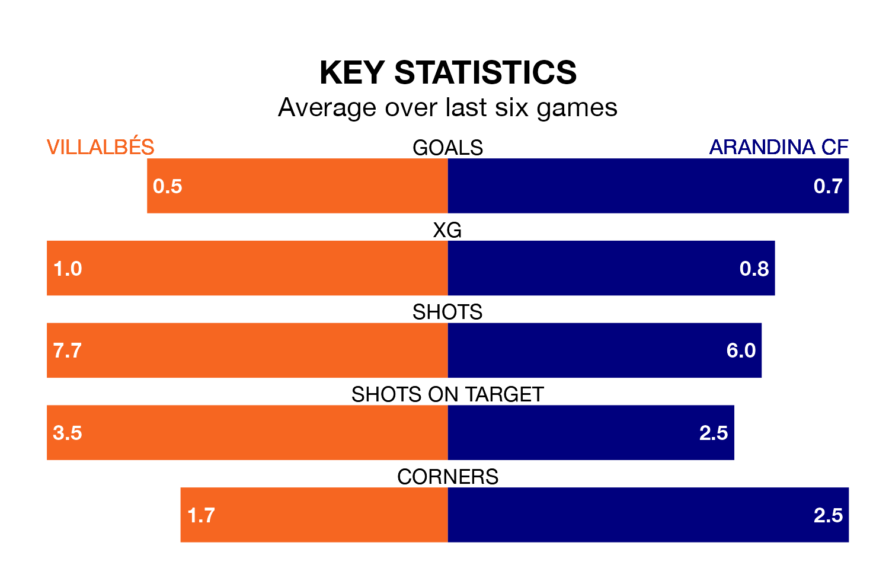

Villalbés are heavy favourites to keep all three points at home in Sunday's early kick-off against Arandina CF.
Villalbés, who sit 12th in Segunda División RFEF Group 1 with 21 games played, are priced at 1.4 to seal victory at the Estadio Municipal A Magdalena.
Sitting six places and 12 points behind them in the table, Arandina are 6.9 to win with *Betting Company*, while the draw is at 3.6.
Villalbés are in terrible form in Segunda División RFEF Group 1, with no wins and two draws from their last six games.
With no wins and three draws over that period, Arandina's form is slightly better – they have taken three points from 18, compared to the hosts' two.
With 16 goals in 21 games so far this season, Villalbés are the league's lowest scorers with 0.8 goals per game. But they are conceding fewer than average too, letting in 20 goals at a rate of 1.0 per game.
The away team are also below average scorers, with 0.8 goals per game, compared to a league average of 1.1. They have conceded 1.5 goals per game.
Villalbés's last match was on Sunday, a 2-0 loss against Club Marino de Luanco.
Arandina drew 2-2 with Deportivo La Coruña B last time out, on February 3.
Updated: 14:59 (UTC), 05/02/24